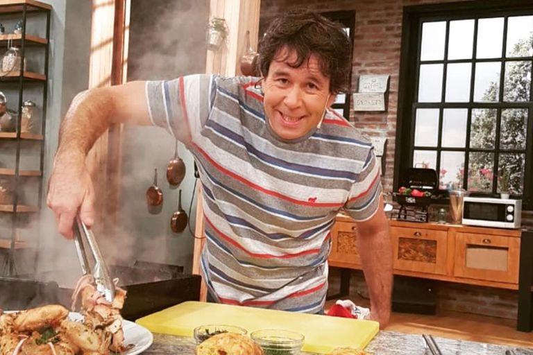

es un chef argentino destacado por su dedicación a la docencia gastronómica. Cocreador y director académico del "Instituto Argentino de Gastronomía" desde 1993 y director de la Licenciatura en Gastronomía de la UADE (Universidad Argentina de la Empresa). Actualmente forma parte de elnueve del programa de cocina Qué mañana!.
Bibliografia
A los 19 años, luego de haber trabajado en distintos restaurants de Buenos Aires, viajó a Paris para realizar su aprendizaje formal en la reconocida escuela francesa “Le Cordon Bleu” donde obtuvo el título de “Grand Diplôme de Cuisine et Patisserie”. En 1990 realizó una especialización en pastelería en la escuela Ritz Escoffier de Paris. Ese mismo año ingresó a trabajar en Fauchon Paris, dirigido por el afamado pastelero Pierre Hermé. Continuó su formación gastronómica en la escuela Lenôtre Paris y realizó cursos de especialización en cocina al vacío en CREA. De regreso en Buenos Aires, comienza su carrera como docente y director del Instituto Argentino de Gastronomía, la escuela más reconocida en su rubro a nivel latinoamericano.
Desde 1996 demuestra sus cualidades como docente y sus dotes histriónicos en sus programas de televisión donde con humor enseña los secretos de la cocina. Está casado desde 1992 y tiene 4 hijos con quienes ha compartido ciclos de televisión por Utilísima y Fox. Rodriguez Palacios se desempeñó como entrenador del equipo argentino que participó en el Bocuse d’Or en las ediciones 1999, 2001 y 2003, donde el chef Diego Gera obtuvo el primer premio por su plato de cordero y el sexto puesto en la clasificación general.
Distinciones
A lo largo de su trayecto ganó los siguentes méritos:
Premio Vocación Académica, otorgado por Fundación el Libro.
Miembro de la Academia Culinaria Francesa
Grand Diplome d’Honneur, Institut de la Gastronomie Français.
Ciudadano Ilustre de la ciudad de Lima, Perú.
Martín Fierro por su labor como conductor en su programa de cable “Ariel a la Parrilla”.
Trayectoria televisiva
Canal del chef
El Maestro de la Cocina (1996-1998)
Utilisima
Maestro de Cocina (1999-2001)
Antena 3
El Toque Ariel
Canal 9
La cocina del 9 (2009-2014)
Sabor Argentina (2011-2013)
La Cocina del Mundo (2012)
Qué Mañana! (2014-Presente)
Qué Noche! (2021-Presente)
Fox Life
Te enseño a cocinar (2013-2014)
Ariel a la Parrilla (2012-2013)
Libros
Técnicas Básicas del Maestro de Cocina. Ed. Atlántida, Bs As. 2000
Pastas al uso de Maestro de Cocina. Ed. Atlántida, Bs As. 2005
Aves al estilo de Maestro de Cocina. Ed. Atlántida, Bs As. 2006
Carnes vacunas al estilo de Maestro de Cocina. Ed. Atlántida, Bs As. 2006
Pescados al uso de Maestro de Cocina. Ed. Atlántida, Bs As. 2006
Masas clásicas al estilo de Maestro de Cocina. Ed. Atlántida, Bs As. 2007
Vegetales, legumbres y cereales al estilo de Maestro de Cocina. Ed. Atlántida, Bs As. 2007
Cordero, cerdo y conejo al uso de Maestro de Cocina. Ed. Atlántida, Bs As. 2007
Mariscos al uso de Maestro de Cocina. Ed. Atlántida, Bs As. 2007
Gran Manual de Técnicas del Maestro de Cocina. Ed. Atlántida, Bs As. 2011
A la Parrilla. Ariel Rodriguez Palacios. Ed. Atlántida, Bs As. 2014